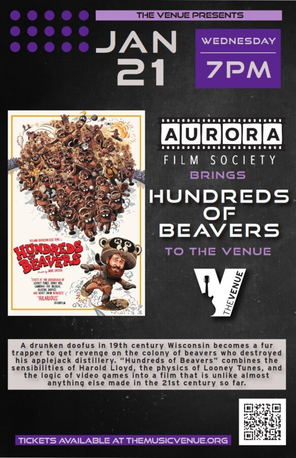

Aurora Film Society Presents: Hundreds Of Beavers
Hundreds Of Beavers [2022 / Mike Cheslik]
A drunken doofus in 19th century Wisconsin becomes a fur trapper to get revenge on the colony of beavers who destroyed his applejack distillery. “Hundreds of Beavers” combines the sensibilities of Harold Lloyd, the physics of Looney Tunes, and the logic of video games into a film that is unlike almost anything else made in the 21st century so far. The visible seams in the DIY digital filmmaking in no way diminish the energy and invention this movie brings to the screen. It’s a rollicking, relentless rush of gags that reaches a ridiculous but somehow entirely appropriate conclusion.
The Aurora Film Society
Since 2018, the Aurora Film Society (AFS) has been broadening our community’s collective horizons by screening great movies together. For $60 a year, our subscribers are shown 12 carefully selected & curated movies, works that are historically important & groundbreaking, works that provide a window into far-flung cultures, works that are sometimes overlooked or unavailable to most audiences. The AFS puts a special emphasis on showing the sorts of luminous & idiosyncratic stories from beyond the mainstream that people of the Fox Valley area would normally not have a chance to see in a theatrical setting. We screen every third Wednesday of the month at The Venue. Doors open at 6:30pm. Programs begins at 7pm.